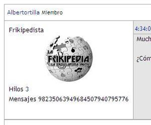

Foro
 De: La Frikipedia, la enciclopedia extremadamente seria.
De: La Frikipedia, la enciclopedia extremadamente seria.
Un foro es un tipo de página web donde las personas se insultan en , a menudo argumentando sus insultos, encubriendo la conversación en hobbies, política, etc. En los foros se suele poner nombres falsos, ya sea por miedo a que sepan quien eres o porque eres más friki que la hostia y te pones nombres como Naruto, Freezer, IP anónima, Al capone o simplemente Frikiman.
Pero si hay algo raro en los foros sobre los nombres, es que la gente se pone el nombre mas tonto o obvio que puede encontrar. Por ejemplo una persona se mete en el foro de 24 y se pone Jack Bauer, se mete en un foro de Star Wars se pone Chewbacca(por sorprendente que parezca se escribe así) y por supuesto se mete en un foro de Doraemon… y se pone Dorameon!!!
Tipos de foros
Foros frikis
Estos foros son muy conocidos, ya que tratan sobre todas las series que existen en el mundo una serie y suelen estar plagados de frikis. Si te metes en un foro de estos, será mejor que seas un puto friki viciao todo el día al manga o al anime o serás rechazado de forma inmediata. Ejemplos:
Foros serios
Estos foros son una MIERDA, son muy aburridos y en ocasiones pueden ocasionar ataques epilépticos y mutaciones y transformaciones en cani. Estas mutaciones se pueden deber especialmente a la seriedad y a la poca gracia que tienen sus usuarios.
Foros vacíos
Estos son los típicos foros que se crea la gente, se registran dos o tres personas y son abandonados. ¿No os da pena que abandonen a los pobres foros? Deberían hacer campañas para que no abandonasen a los foros, igual que a las mascotas!!!!!!!
Ejemplo de foro abandonado: http://forotodo.forumatic.com
Foros de juegos
Estos son los foros creados para juegos como Magefight y demás mierdas. Aquí te puedes encontrar de todo, desde frikis a gente normal, pasando por góticos y neonazis. Pero lo que nunca encontrarás en uno de estos, es un cani, porque son expulsados inmediatamente.
Foros de porno
Estos son los foros favoritos de la gente. Suelen contener fotos, videos y archivos de texto de famosas desnudas. Aunque la mayoría de la gente normal usa estas paginas cuando están aburríos y no tienen otra cosa que hacer, que matarse a pajas. Podría algunos ejemplos, pero por culpa de La Frikipedia no se puede poner imágenes, ni cosas de este tipo!!! (Gracias frikipedia!! ¬¬)
Tipos de foreros
- Los foreros que les encanta debatir sobre cualquier idiotez que haya en el momento. Solo para poder ejercitar sus dedos escribiendo una tesis.
- Los foreros que solo quieren buscar roña, entran en los foros para hacer pasar un mal rato a esos santos de los demás que solo quieren pasarla bien.
- Los foreros que les encanta levantarse a las chicas/chicos que viven por su área.
- Los foreros que se arman las firmas como si estuvieran en un concurso de arte.
- Los foreros que nadie entiende.
- Los foreros que parecen navidad: aparecen una vez por año.
- Los foreros spam, solo entran para dejarte un poquito de publicidad, como si ya no tuviéramos suficiente.
- Los foreros invisibles, aquellos que se registran y nunca sabes de ellos. No sabes si son unos cobardes que no escriben, no sabes si son mancos y no pueden escribir, no sabes si los secuestraron alienigenas y por eso no vuelven a aparecer por el foro, no sabes si prefieren leer en vez de escribir, lo que nos lleva a nuestra siguiente categoría
- Los foreros pasivos, prefieren leer en vez de escribir. Se registran en el foro para que los demás foreros hagan su trabajo y escriba. El se pone cómodo en su asiento y lee lo que los demás tardaron su buen rato en escribir.
 Forero que hace mensajes sólo por tener cantidad
- Los foreros que rompen las reglas, estos siempre hacen metarol en los foros de rol, y van desde estupidos con dos lineas en el post asta en casos muy poco comunes lo hace algun administrador o algun buen rolero, por ejemplo si estan rodeados por un ejercito que lo va a capturar dicen : los salte a todos y me fui, a lo que el administrador solo puede responder " O.o " y cuando se da cuenta que por mas repetir las reglas el pelotudo
olvidadiso niño no las cumplen lo bannean.
- Los que creen la estan haciendo de oro, estos no se dan cuenta de que sus post son horribles con 0 ortografia y unas lineas sin imaginacion donde solo responde a el
desgraciado inafortunado rolero que este roleando con el, esta clase habeses nunca se llega a dar cuenta por mas que le digan con palabras amables que se valla del foro y que no aporta nada hay, el sigue activo, abeses estos roleros recapacitan y leen sus post luego de escribirlos y empiesan a escribir desentemente.
- Los foreros que siempre están dispuestos a ayudar, los que siempre se acuerdan de cumpleaños y esas fechas que en un foro mucho no importan. Cuando hay peleas en el foro, el siempre esta en medio, tratando de resolver la riña. Estos suelen llegar a ser moderadores.
- Los foreros arcoiris (no me refiero a los gays), estos hacen un descarado uso de los colores que se le puede poner a los textos, estos escriben sus accciones en azul, sus palabras en verde y sus pensamientos en rosa, incluso pone color color diferente cuando rolea como primera persona a como rolea con tercera persona, y cuando esta con otros personajes del rol inventado, les pone un color diferente a cada uno y de verdad parece un arcoiris, llega a doler la vista tener que leer sus post(pero no mas que el "forero que cree que la esta haciendo de oro" y el "forero HOYGAN").
- Los foreros autistas que solo se limitan a poner imágenes en movimiento (gif).
- Los foreros que creen que se las saben todas, postean en tono burlón y arrogante, casi siempre tienen mucho tiempo en el foro y muchos amigos (que por cierto nunca han conocido) los cuáles los apoyan y repiten sus respuestas, denominados comúnmente chupamedias.
- Los foreros multinick. Son los foreros que les expulsan y desde entonces empiezan a crearse nicks a lo burro. Mítico es Numeritos que se llegó a hacer más de 100 multinicks en Meristation.
- Los foreros HOYGAN. Son los que no han terminado la primaria y escriben con una ortografía hasta el culo. Cuando alguien les reclama que no puede entender ni putas de lo que escribe, responden: "Qué, si yo escribo bien."
- Y por ultimo los foreros normales, los que no escriben ni mucho ni poco, los que entran todos los días un rato por día, los que su firma son normales, de tamaño normales, simpática, creativa, pero no una obra de arte ni una que parece sacada del basurero, dispuesto a ayudar, pero no metido en todo siempre.
Moderadores
Son las personas encargadas del foro, osea las que controlan, revisan y borran lo que escribes. Mas te vale llevarte bien con ellos o de lo contrario serás arrojado al agujero negro del internet.
Características
- Creerse muy correctos
- Crear reglas estúpidas como: "Mínimo cuatro líneas si no quieres que borremos tu comentario y nos re-caguemos en tu madre".
- Siempre parcializarse con alguien en una discusión. No ser nunca objetivos.
- Cerrarte temas porque les sale del culo
- Tener alguna de las siguientes enfermedades: homofobia, fundamentalismo cristiano, o apoyo a Bush.
- Son todos de la familia "Gordo Granudo" (Vease en las fotos de internet)
- No tienen vida social
La Frikipedia, nunca tuvo un foro. Repito, ¡NUNCA!
Enlaces externos
 Informática Informática
|
Personajes Infames Famosos
Dispositivos de Almacenamiento
|
Autor(es):
- Krusher
- Nexo
- Doctor grijander
- Omicrons
- Mr Dios
- Roms
- Guilfer
- Dr. Kildare
- Q se yo
- Fasgort
Frikipedia 2005-2016, Licencia
GFDL 1.2 - Extraído por FrikiLeaks